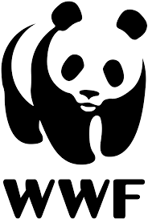

WWF
The World Wide Fund for Nature (WWF) is an international organization working  on issues regarding the conservation, research and restoration of the environment, formerly named the World Wildlife Fund. WWF was founded in 1961.DescriptionThe World Wide Fund for Nature is an international non-governmental organization founded in 1961, working in the field of wilderness preservation, and the reduction of human impact on the environment. It was formerly named the World Wildlife Fund, which remains its official name in Canada and the United States.DescriptionThe World Wide Fund for Nature is an international non-governmental organization founded in 1961, working in the field of wilderness preservation, and the reduction of human impact on the environment. It was formerly named the World Wildlife Fund, which remains its official name in Canada and the United States.